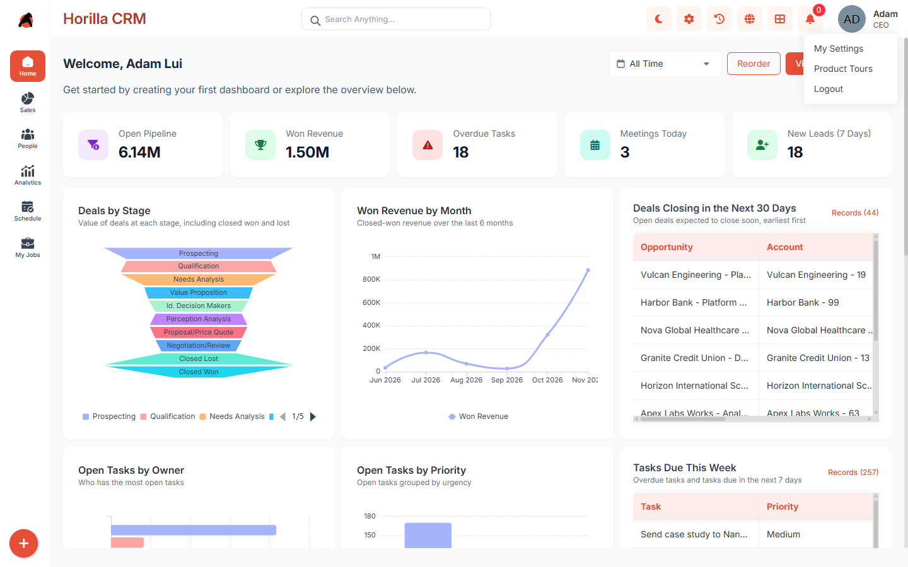
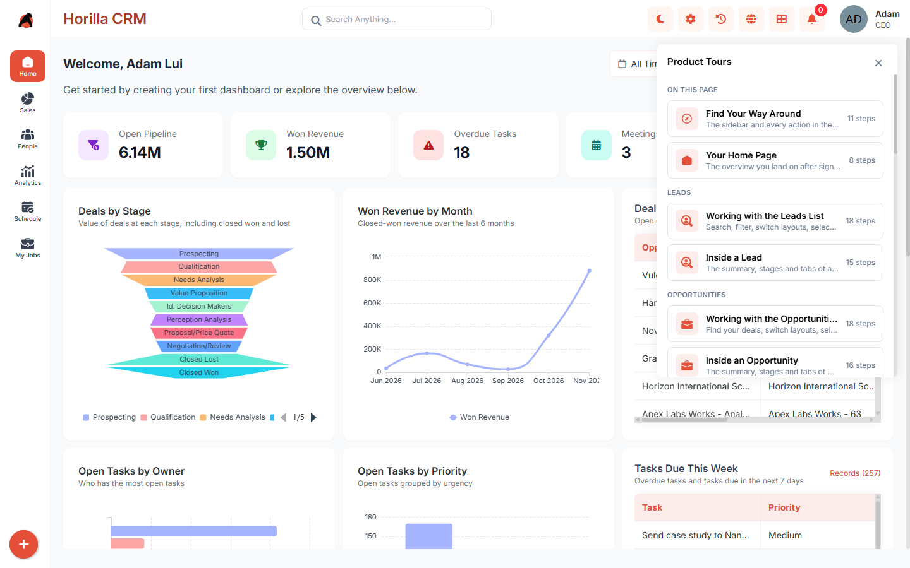
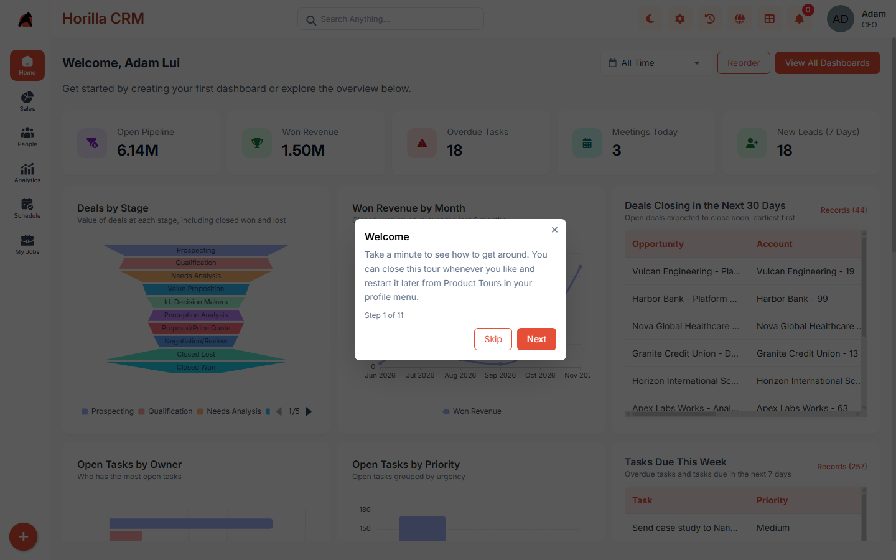

Overview
Click the profile icon at the right of the header. The menu lists My Settings, Product Tours and Logout. Product Tours is the second item.

The panel title is Product Tours. Tours for the page you are on are listed first under On this page. On Home those are Find Your Way Around (11 steps) and Your Home Page (8 steps). The other tours follow in groups such as Leads, Opportunities, Campaigns, Forecast, Accounts and Contacts. Each card shows the tour name, a short description and the number of steps. The list scrolls.

Running a tour
The first time Home opens, Find Your Way Around starts by itself. After that, a tour starts when you click its card. The first step is Welcome, marked Step 1 of 11, with Skip and Next. The close control and Skip end the tour. Next moves to the next step. You can start the same tour again from the panel. The step you had reached is not remembered. The only memory is that the automatic tour has already started, so it does not start itself again.
